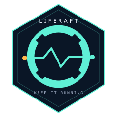
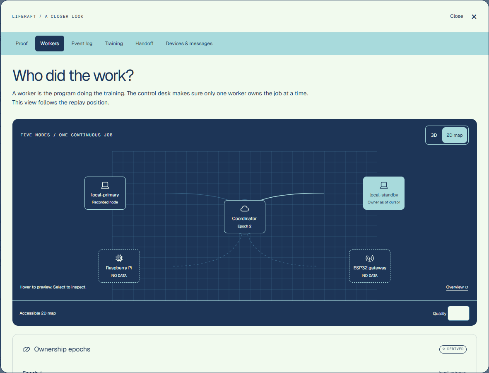
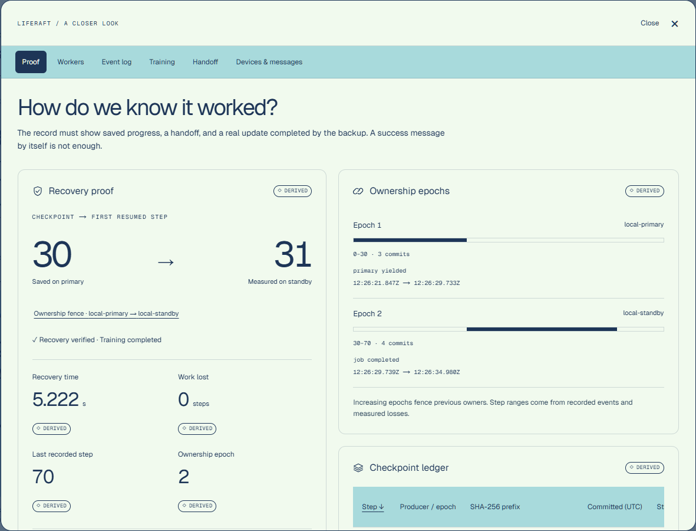
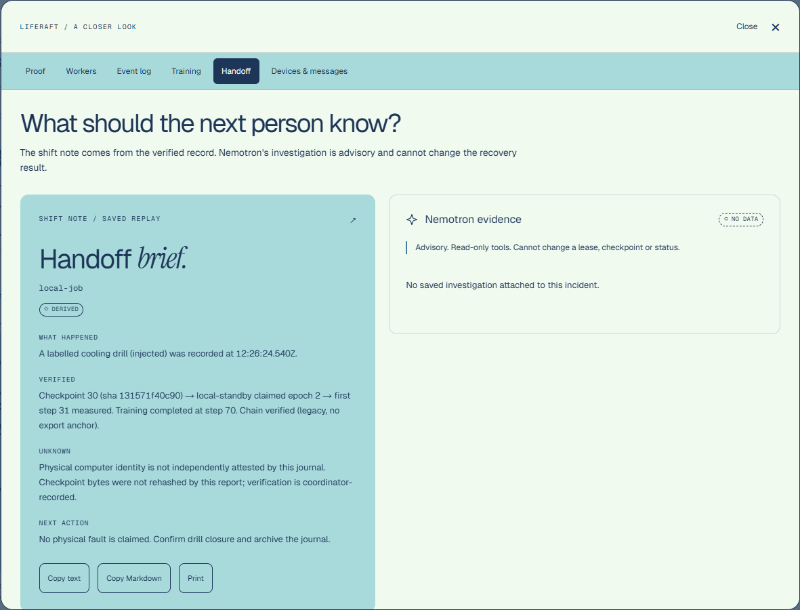

Fenced ownership
Leases expire. Epochs increase. A stale worker cannot commit work after ownership moves.

LIFERAFT/COMPUTE CONTINUITYKEEP THE WORK MOVING
Compute continuity for AI infrastructure.
When a machine is at risk, the work needs a way out.
Save it. Hand it off. Prove it kept going.
Pilot contact is being set. The email draft opens without a recipient.
Mission control runs on-site.
The public page shows the flight.
Saved local-job evidence · injected cooling drill
Recorded playback, never a live console.
01 / A SCENARIO
03:07 A.M.
Maya’s phone lights up. Rack 7. Thermal alarm.
Eleven days of training are on that machine.
The handoff is a Slack thread and a prayer.
What survived? Who owns it now? Where’s the proof?
02 / THE RESCUE SEQUENCE
One pull cord.
Four beats to continuity.
A physical button injects the drill. Measured temperatures keep their own provenance.
Model, optimizer, step and RNG state. Immutable bytes, verified by SHA-256.
A finite lease and a new fencing epoch give the standby permission to continue.
A real optimizer update on the new owner is the evidence of recovery.
Checkpoint-aware training only. The pull cord triggers a test incident; no real overheating is induced.
03 / MISSION CONTROL
The story, the state,
and the receipts.



Screenshots of saved evidence, captured locally. The local-job recording demonstrates the local adapter; it is not evidence of a new cross-device drill or live provider call.
04 / BUILT AROUND EVIDENCE
The AI explains.
It never decides.
Leases expire. Epochs increase. A stale worker cannot commit work after ownership moves.
Hash-linked events make edits detectable. Anchored exports verify their head; legacy exports stay labelled unanchored.
Typed tools gather evidence and explain the incident. The deterministic coordinator owns recovery decisions.
05 / NEXT — PLANNED
Where we go from here.
Planned, not shipping claims.
A clearer view of recovery readiness.
More places for protected work to land.
Continuity beyond the rack.
Incident context where operators work.
MISSION 001 / KEEP IT RUNNING
06 / LIFE RAFT, REAL PEOPLE
LifeRaft
Building a way for AI work to keep going.
Meet the project. Follow the mission.
THE WORK GETS ANOTHER CHANCE.
Training survived.
Watch the rescue